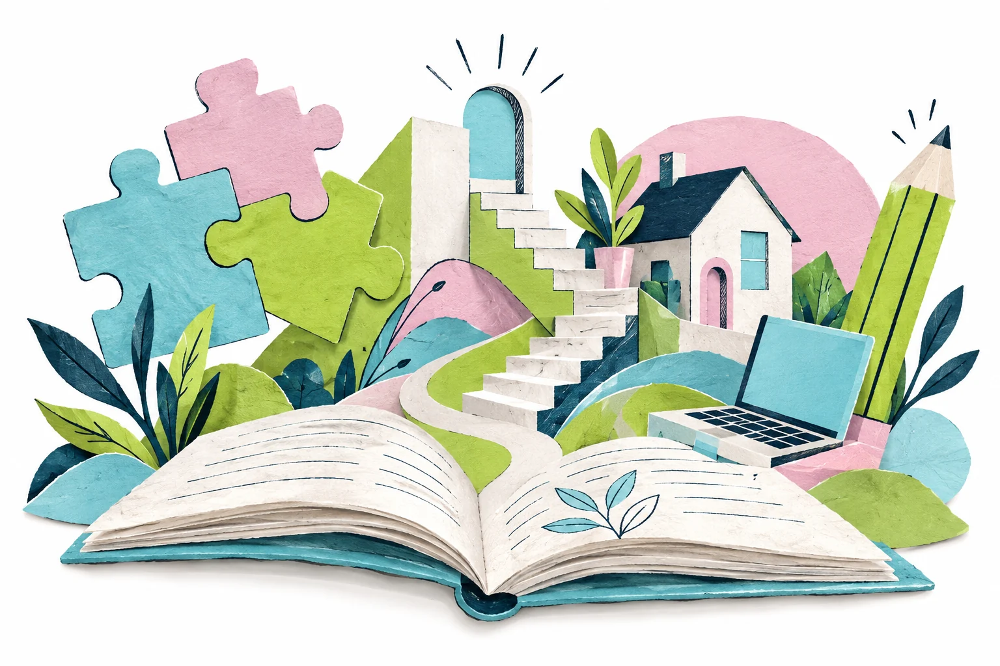

Tu nueva web
de ALAF.
Diseño artístico, siete páginas, logo original, tres poses de Alafito y una biblioteca de ilustraciones. Todo está incluido en esta carpeta.

Para publicarla: sube el contenido de dist/ al hosting. Para editar, revisa README.md. El contacto por WhatsApp está listo; el envío opcional por correo requiere configurar el servicio. Extrae todo el ZIP antes de abrir la web.